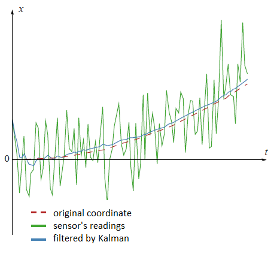
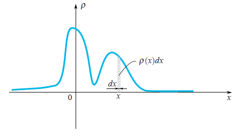
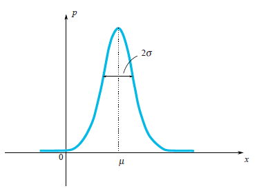
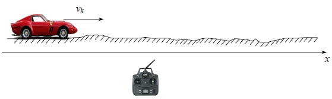
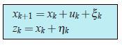
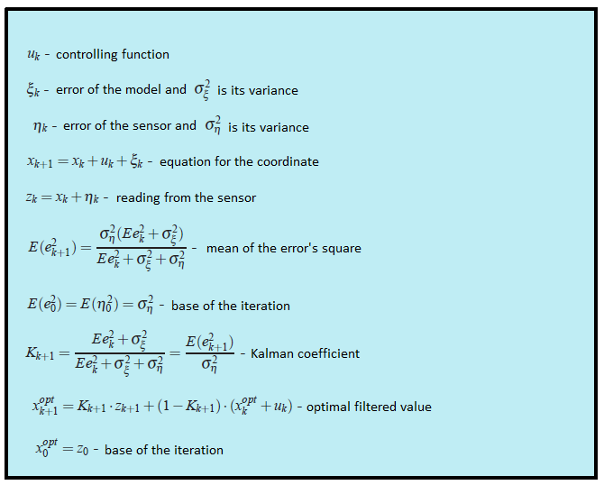
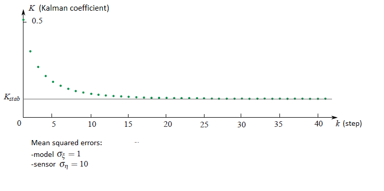
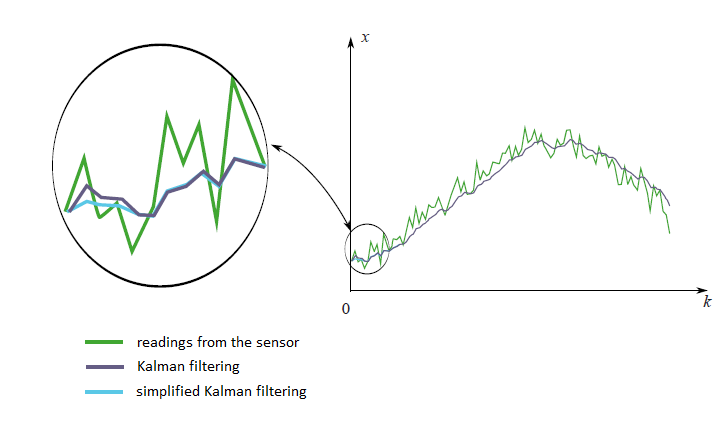

Kalman Filter

There are a lot of different articles on Kalman filter, but it is difficult to find the one which contains an explanation, where all filtering formulas come from. I think that without understanding of that this science becomes completely non understandable. In this article I will try to explain everything in a simple way.
Kalman filter is very powerful tool for filtering of different kinds of data. The main idea behind this that one should use an information about the physical process. For example, if you are filtering data from a car’s speedometer then its inertia give you a right to treat a big speed deviation as a measuring error. Kalman filter is also interesting by the fact that in some way it is the best filter. We will discuss precisely what does it mean. In the end of the article I will show how it is possible to simplify the formulas.
Preliminaries
At first, let’s memorize some definitions and facts from probability theory.
Random variable
When one says that it is given a random variable $\xi$, it means that it may take random values. Different values come with different probabilities. For example, if someone drops a dice then the set of values is discrete $\{1,2,3,4,5,6\}$. When you deal with a speed of moving particle then obviously you should work with a continuous set of values. Values which come out after each experiment (measurement) we would denote by $x_1, x_2,...$, but sometimes we would use the same letter as we use for a random variable $\xi$. In the case of continuous set of values a random variable is characterized by its probability density function $\rho(x)$. This function shows a probability that the random variable falls into a small neighbourhood $dx$ of the point $x$. As we can see on the picture, this probability is equal to the area of the hatched rectangle below the graph $\rho(x)dx$.

Quite often in our life, random variables have the Gauss Distribution, when the probability density is $\rho(x)\sim e^{-\frac{(x-\mu)^2}{2\sigma^2}}$.

We can see that the bell-shaped function $\rho(x)$ is centered at the point $\mu$ and its characteristic width is around $\sigma$.
Since we are talking about the Gaussian Distribution, then it would be a sin not to mention from where does it come from. As well as the number $e$ and $\pi$ are firmly penetrated in mathematics and can be found in the most unexpected places, so Gaussian Distribution has deep roots in the theory of probability. The following remarkable statement partly explains presence of the Gauss Distribution in a lot of processes:
Let a random variable $\xi$ has an arbitrary distribution (in fact there are some restrictions on arbitrariness, but they are not restrictive at all). Let’s perform $n$ experiments and calculate a sum $\xi_1+...+\xi_n$, of fallen values. Let’s make a lot of experiments. It is clear that every time we will get a different value of the sum. In other words, this sum is a random variable with its own distribution law. It turns out that for sufficiently large $n$, the law of distribution of this sum tends to a Gaussian Distribution (by the way, the characteristic width of a bell is growing like $\sqrt n$. Read more in the Wikipedia:
Central limit theorem. In real life there are a lot of values which are a sum of large number of independent and identically distributed random variables. So this values have Gauss Distribution.
Mean Value
By definition, a mean value of a random variable is a value which we get in a limit if we perform more and more experiments and calculate a mean of fallen values. A mean value is denoted in different ways: mathematicians denote by $E\xi$ (expectation), Physicists denote it by $\overline{\xi}$ or $<\xi>$. We will denote it as mathematicians do.
For instance, a mean value of Gaussian Distribution $\rho(x)\sim e^{-\frac{(x-\mu)^2}{2\sigma^2}}$ is equal to $\mu$.
Variance
For Gaussian distribution, we clearly see that the random variable tends to fall within a certain region of its mean value $\mu$. Let us enjoy the Gaussian distribution once again:
On the picture, one may see that a characteristic width of a region where values mostly fall is $\sigma$. How can we estimate this width for an arbitrary random variable? We can draw a graph of its probability density function and just visually evaluate the characteristic range. However it would be better to choose a precise algebraic way for this evaluation. We may find a mean length of deviation from the mean value: $E|\xi-E\xi|$. This value is a good estimation of a characteristic deviation of $\xi$ . However we know very well, how problematic it is to use absolute values in formulas, thus this formula is rarely used in practice.
A simpler approach (simple from calculation’s point of view) is to calculate $E(\xi-E\xi)^2$.
This value called variance and denoted by $\sigma_\xi^2$. The quadratic root of the variance is a good estimation of random variable’s characteristic deviation. It’s called the standard deviation.
For instance, one can compute that for the Gaussian distribution $\rho(x)\sim e^{-\frac{(x-\mu)^2}{2\sigma^2}}$ the variance is equal to $\sigma^2$ thus the standard deviation is $\sigma$. This result really corresponds to our geometrical intuition. In fact a small cheating is hidden here. Actually in a definition of the Gauss distribution you see the number $2$ in a denominator of expression $-\frac{(x-\mu)^2}{2\sigma^2}$. This $2$ stands there in purpose, for the standard deviation $\sigma_\xi$ to be equal exactly to $\sigma$. So the formula of Gauss distribution is written in a way, which keep in mind that one would compute its standard deviation.
Independent random variables
Random variables may depend on each other or not. Imagine that you are throwing a needle on the floor and measuring coordinates of its both ends. This two coordinates are random variables, but they depend on each other, since a distance between them should be always equal to the length of the needle. Random variables are independent from each other if falling results of the first one doesn’t depend on results of the second. For two independent variables $\xi_1$ and $\xi_2$ the mean of their product is equal to the product of their mean: $E(\xi_1\cdot\xi_2) = E\xi_1\cdot\xi_2$
Proof
For instance to have blue eyes and finish a school with higher honors are independent random variables. Let say that there are $20\% = 0.2$ of people with blue eyes and $5\%=0.05$ of people with higher honors. So there are $0.2\cdot 0.5 = 0.01 = 1\%$ of people with blue eyes and higher honors. This example helps us to understand the following. For two independent random variables $\xi_1$ and $\xi_2$ which are given by their density of probability $\rho_1(x)$ and $\rho_2(y)$, the density of probability $\rho(x,y)$ (the first variable falls at $x$ and the second at $y$) can by find by the formula
$$\rho(x,y) = \rho_1(x)\cdot\rho_2(y)$$
It means that
$$
\begin{array}{l}
\displaystyle E(\xi_1\cdot\xi_2)=\int xy\rho(x,y)dxdy=\int xy\rho_1(x)\rho_2(y)dxdy=\\ \displaystyle \int x\rho_1(x)dx\int y\rho_2(y)dy=E\xi_1\cdot E\xi_2
\end{array}
$$
As you see, the proof is done for random variables which have a continuous spectrum of values and are given by their density of probability function. The proof is similar for general case.
Kalman filter
Problem statement
Let denote by $x_k$ a value which we intend to measure and then filter. It can be a coordinate, velocity, acceleration, humidity, temperature, pressure, e.t.c.
Let us start with a simple example, which will lead us to the formulation of the general problem. Imagine that you have a radio control toy car which can run only forward and backward. Knowing its mass, shape, and other parameters of the system we have computed how the way how a controlling joystick acts on a car’s velocity $v_k$.

The the coordinate of the car would by the following formula
$$x_{k+1}=x_k+v_kdt$$
In real life we can’t , we can’t have a precise formula for the coordinate since some small disturbances acting on the car as wind, bumps, stones on the road, so the real speed of the car will differ from the calculated one. So we add a random variable $\xi_k$ to the right hand side of last equation:
$$x_{k+1}=x_k+v_kdt+\xi_k$$
We also have a GPS sensor on the car which tries to measure the coordinate of the car $x_k$. Of course there is an error in this measuring, which is a random variable $\eta_k$. So from the sensor we would get a wrong data:
$$z_k=x_k+\eta_k$$
Our aim is to find a good estimation for true coordinate $x_k$, knowing a wrong sensor’s data $z_k$. This good estimation we will denote by $x^{opt}$.
In general the coordinate $x_k$ may stands for any value (temperature, humidity,...) and the controlling member we would denote by $u_k$ ( in the example with a car $u_k = v_k\cdot dt$). The equations for the coordinate and the sensor measurements would be the following:
 (1)
Let us discuss, what do we know in these equations.
- $u_k$ is a known value which controls an evolution of the system. We do know it from the model of the system.
- The random variable $\xi$ represents the error in the model of the system and the random variable $\eta$ is a sensor’s error. Their distribution laws don’t depend on time (on iteration index $k$).
- The means of errors are equal to zero: $E\eta_k = E\xi_k = 0$.
- We might not know a distribution law of the random variables, but we do know their variances $\sigma_\xi$ and $\sigma_\eta$. Note that the variances don’t depend on time (on $k$) since the corresponding distribution laws neither.
- We suppose that all random errors are independent from each other: the error at the time $k$ doesn’t depend on the error at the time $k’$.
Note that a filtration problem is not a smoothing problem. Our aim is not to smooth a sensor’s data, we just want to get the value which is as close as it is possible to the real coordinate $x_k$.
Kalman algorithm
We would use an induction. Imagine that at the step $k$ we have already found the filtered sensor’s value $x^{opt}$, which is a good estimation of the real coordinate $x_k$. Recall that we know the equation which controls the real coordinate:
$$x_{k+1} = x_k + u_k + \xi_k$$
Therefore before getting the sensor’s value we might state that it would show the value which is close to $x^{opt}+u_k$. Unfortunately so far we can’t say something more precise. But at the step $k+1$ we would have a non precise reading from the sensor $z_{k+1}$.
The idea of Kalman is the following. To get the best estimation of the real coordinate $x_{k+1}$ we should get a golden middle between the reading of non precise sensor $z_{k+1}$ and $x^{opt}+u_k$ - our prediction, what we have expected to see on the sensor. We will give a weight $K$ to the sensor’s value and $(1-K)$ to the predicted value:
$$x^{opt}_{k+1} = K\cdot z_{k+1} + (1-K)\cdot(x_k^{opt}+u_k)$$
The coefficient $K$ is called a Kalman coefficient. It depends on iteration index, and strictly speaking we should rather write $K_{k+1}$. But to keep formulas in a nice shape we would omit the index of $K$.
We should choose the Kalman coefficient in way that the estimated coordinate $x^{opt}_{k+1}$ would be as close as it is possible to the real coordinate $x_{k+1}$.
For instance, if we do know that our sensor is very super precise then we would trust to its reading and give him a big weight ($K$ is close to one). If the sensor conversely is not precise at all, then we would rely on our theoretically predicted value $x^{opt}_k+u_k$.
In general situation, we should minimize the error of our estimation:
$$e_{k+1} = x_{k+1}-x^{opt}_{k+1}$$
We use equations (1) (those which are on a blue frame), to rewrite the equation for the error:
$$e_{k+1} = (1-K)(e_k+\xi_k) - K\eta_{k+1}$$
Proof
$$
\begin{array}{l}
{
e_{k+1}=x_{k+1}-x^{opt}_{k+1}=x_{k+1}-Kz_{k+1}-(1-K)(x^{opt}_k+u_k)=\\ =x_k+u_k+\xi_k-K(x_k+u_k+\xi_k+\eta_{k+1})-(1-K)(x^{opt}_k+u_k)=\\=(1-K)(x_k-x_k^{opt}+\xi_k)-K\eta_{k+1}=(1-K)(e_k+\xi_k)-K\eta_{k+1}
}
\end{array}
$$
Now it comes a time to discuss, what does it mean the expression “to minimize the error”? We know that the error is a random variable so each time it takes different values. Actually there is no unique answer on that question. Similarly it was in the case of the variance of a random variable, when we were trying to estimate the characteristic width of its probability density function. So we would choose a simple criterium. We would minimize a mean of the square:
$$E(e^2_{k+1})\rightarrow min$$
Let us rewrite the last expression:
$$E(e^2_{k+1})=(1-K)^2(E_k^2+\sigma^2_\xi)+K^2\sigma^2_\eta$$
Key to the proof
From the fact that all random variables in the equation for $e_{k+1}$ don’t depend on each other and the mean values $E\eta_{k+1}=E\xi_k=0$, follows that all cross terms in $E(e^2_{k+1})$ become zeros:
$$E(\xi_k\eta_{k+1})=E(e_k\xi_k)=E(e_k\eta_{k+1})=0.$$
Indeed for instance $E(e_k\xi_k) = E(e_k)E(\xi_k)=0.$
Also note that formulas for the variances looks much simpler: $\sigma^2_\eta = E\eta^2_k$ and $\sigma^2_\eta = E\eta^2_{k+1}$ (since $E\eta_{k+1}=E\xi_k=0$)
The last expression takes its minimal value, when its derivation is zero. So when:
$$\displaystyle K_{k+1} = \frac{Ee^2_k + \sigma^2_\eta}{Ee^2_k+\sigma^2_\xi+\sigma^2_\eta}$$
Here we write the Kalman coefficient with its subscript, so we emphasize the fact that it do depends on the step of iteration. We substitute to the equation for the mean square error $E(e^2_{k+1})$ the Kalman coefficient $K_{k+1}$ which minimize its value:
$$\displaystyle E(e^2_{k+1}) = \frac{\sigma^2_\eta(Ee^2_k + \sigma^2_\eta)}{Ee^2_k+\sigma^2_\xi+\sigma^2_\eta}$$
So we have solved our problem. We got the iterative formula for computing the Kalman coefficient.
All formulas in one place:

Example
On the plot from the beginning of this article there are filtered datum from the fictional GPS sensor, settled on the fictional car, which moves with the constant acceleration $a$.
$$x_{t+1} = x_t+ at\cdot dt+ \xi_t$$
Look at the filtered results once again:
The code on matlab:
clear all;
N=100 % number of samples
a=0.1 % acceleration
sigmaPsi=1
sigmaEta=50;
k=1:N
x=k
x(1)=0
z(1)=x(1)+normrnd(0,sigmaEta);
for t=1:(N-1)
x(t+1)=x(t)+a*t+normrnd(0,sigmaPsi);
z(t+1)=x(t+1)+normrnd(0,sigmaEta);
end;
%kalman filter
xOpt(1)=z(1);
eOpt(1)=sigmaEta; % eOpt(t) is a square root of the error dispersion (variance).
% It's not a random variable.
for t=1:(N-1)
eOpt(t+1)=sqrt((sigmaEta^2)*(eOpt(t)^2+sigmaPsi^2)/(sigmaEta^2+eOpt(t)^2+sigmaPsi^2))
K(t+1)=(eOpt(t+1))^2/sigmaEta^2
xOpt(t+1)=(xOpt(t)+a*t)*(1-K(t+1))+K(t+1)*z(t+1)
end;
plot(k,xOpt,k,z,k,x)
Analysis
If one look at how the Kalman coefficient $K_k$ changes from the iteration $k$, it is possible to see that it stabilizes to the certain value $K_{stab}$. For instance if the square mean errors of sensor and the model respect to each other as ten to one, then the plot of the Kalman coefficient dependency from the iteration step would be the following:

In the next example we would discuss how that can simplify our life.
Second example
In practice it happens that we don’t know almost anything from the physical model what we are filtering. Imagine you have decided to filter that measurements from your favourite accelerometer. Actually you don’t know in forward how the accelerometer would be moved. Only thing you might know is the variance of sensor’s error $\sigma^2_\eta$. In this difficult problem we might put all unknown information from the physical model to the random variable $\xi_k$:
$$x_{k+1} = x_k + \xi_k$$
Strictly speaking this kind of system doesn’t satisfy the condition that we have imposed on the random variable $\xi_k$. Since it holds the information unknown for us physics of the movement. We can’t say that it different moment of times the errors are independent from each other and their means are equals to zero. In other words, it means that for this kind of situations the Kalman theory isn’t applied. But anyway we can try to use the machinery of Kalman theory just by choosing some reasonable values for $\sigma_\xi^2$ and $\sigma_\eta^2$ to get just a nice graph of filtered datum.
But there is a much simpler way. We saw that with increasing of the step $k$ the Kalman coefficient always stabilizes to the certain value $K_{stab}$. So instead of guessing the values of the coefficients $\sigma^2_\xi$ and $\sigma^2_\eta$ and computing the Kalman coefficient $K_k$ by difficult formulas, we can assume that this coefficient is constant and select just this constant. This assumption would not affect much on filtering results. At first we anyway the Kalman machinery is not exactly applicable to our problem and secondly, the Kalman coefficient quickly stabilizes to the constant. In the end everything becomes very simple. We don’t need almost any formula from Kalman theory, we just need to select a reasonable value $K_{stab}$ and insert it to the iterative formula
$$x^{opt}_{k+1} = K_{stab}\cdot z_{k+1}+(1-K_{stab})\cdot x_k^{opt}$$
On the next graph you can see the filtered by two different ways measurements from an imaginary sensor. The first method is the honest one, with all formulas from Kalman theory. The second method is the simplified one.

We see that there is not a big difference between two this methods. There is a small variation in the beginning, when the Kalman coefficient still is not stabilized.
Discussion
We have seen that the main idea of Kalman filter is to choose the coefficient $K$ in a way that the filtered value
$$x^{opt}_{k+1}= Kz_{k+1}+(1-K)(x^{opt}_k+u_k)$$
in average would be as close as possible to the real coordinate $x_{k+1}$. We see that the filtered value $x^{opt}_{k+1}$ is a linear function from the sensor's measurement $z_{k+1}$ and the previous filtered value $x^{opt}_k$. But the previous filtered value $x^{opt}_k$ itself is a linear function of the sensor’s measurement $z_k$ and the pre-previous filtered value $x^{opt}_{k-1}$. And so on until the end of the chain. So the filtered value linearly depends on all previous sensor’s readings:
$$x^{opt}_{k+1}= \lambda + \lambda_0z_0 + \ldots + \lambda_{k+1}z_{k+1}$$
That is a reason that the Kalman filter is called a linear filter. It is possible to prove that the Kalman filter is the best from all linear filters. The best in a sense that it minimizes a square mean of the error.
Multidimensional case
It is possible to generalise all the Kalman theory to the multidimensional case. Formulas there looks a bit more ellaborated but the idea of their deriving still remains the same as in a one dimension. For instance, In this nice
video you can see the example.
Literature
The original article which is written by Kalman you can download here:
http://www.cs.unc.edu/~welch/kalman/media/pdf/Kalman1960.pdf